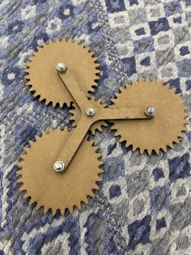

Making the Planetary Gearbox:
- First, I picked a YouTube video tutorial on how to make the planetary gearbox. The YouTube video tutorial that I followed is linked below:
- Before jumping into making the gearbox, I decided on some things to make sure that the gears in my gearbox will turn out to be compatible.
- We determined that our gear ratio = 1:6 (Gr = 1/6).
- Ring gear (internal gear) will be fixed.
- Earth gear (centermost spur gear) will be the driving gear (its rotation will force the other gears to rotate).
- We will use a carrier to help distribute the rotational force.
- Module = 2; Pressure Angle = 20 degrees
- Next, I did some math to know how to design my individual gears.
- The ring gear = 80 teeth (R = 80)
- To determine Earth’s # of teeth, R/((1/Gr) — 1) → 16 teeth (E = 16)
- To determine the teeth of the gears that orbit the Earth gear, R-E / Module → 32 teeth (P = 32)
- Number of orbiting items = 3
- To make sure that the gears are compatible with each other: (R+E)/(# of orbiting items) → 19; if the number is a whole number, then that means the gearboxes will turn with each other based on their number of teeth
- I used the handy spur gear add-in to speed up the process of designing my gears.
- There is a feature on Autodesk Fusion that allows for the creation of spur gears
- Input math information for the right number of teeth
- Additional information includes root fillet radius, gear thickness, and hole diameter.
- The gear thickness does not matter for me much in this case because I will be laser cutting, which means the thickness of the gear is based on the thickness of the material I choose to laser cut.
- The hole diameter is based on what type of bolt I will want to use later on
- Creating the Internal Gear
- The internal gear is just the outer ring, so the hole diameter does not matter
- After making the spur gear, I created a cylinder and extude cut in order to get just the shape from the edge of the cylinder to the stop of the teeth, leaving a gaping hole in the center
- Creating the Earth Gear
- The Earth gear has 16 teeth and includes adding a backlash of 0.5 mm and it has a hole diameter of 5 mm (since I will be using 5 mm nuts and bolts)
- Creating the Orbiting Items Gear
- The Orbiting Items gear has 32 teeth but the rest is the same as the Earth
- Creating the Carrier
- I created a circle of 10 mm diameter with the same centers as the circles with 5 mm diameter on the Earth and 3 orbiting items gears.
- From each orbiting item gear, I linked two lines from the places where my 10 mm circle was the widest directly to the widest part of the 10 mm circle of the Earth Gear
- My lines were not the cleanest, so I used the secant function to make sure my lines did not cross into the circles. In total, there were 6 lines
- I then filet the edges where the lines connecting one orbiting item to Earth intersected with lines from another orbiting item.
- I then laser-cut my prototype onto a mat board. I used 5 mm x 20 bolts and 5 mm lock nuts. My initial impressions are that this is so cool. This is my first-ever GEARBOX creation! Upon inspection, however, the flimsy cardboard makes it so that the gears keep on catching on each others’ teeth. So… we will now print on wood.
- I laser cut on a 6 mm general medium wood piece. The pieces fit much better together and the gears turn without catching. However, because of the head of the bolts attaching the carrier to the various gears, the inner gears do not fit with the thickness of the ring gear. The inner gears are currently at a taller height than the ring gear, making it hard for the inner gears to gain traction on the ring gear since half of it is not attached to the ring gear. To troubleshoot this problem, we printed another ring gear from a piece of wood of similar properties.
- I then glued the two ring gears together with wood glue, but no matter how I tried to align the pieces, they were not quite aligned. The wood glue also filled in spaces in the teeth crevices, preventing the orbiting items gears from being able to rotate effectively. The glue was occupying the spot. Therefore, I found a thicker piece of wood, 12 mm to make a 12 mm with just one piece of wood instead of two pieces.


